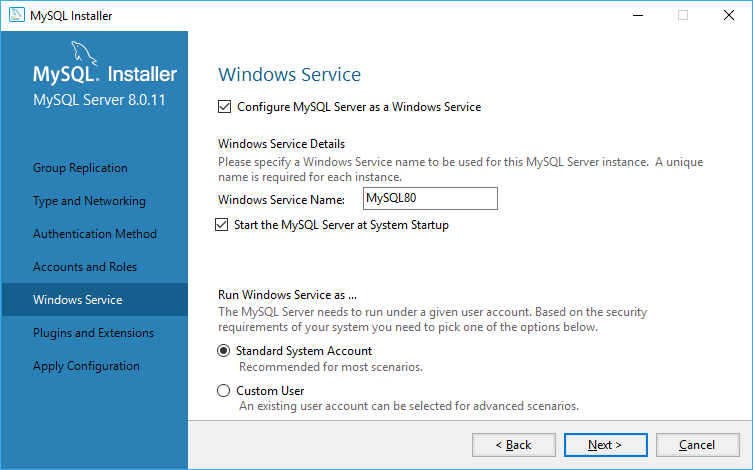

Что такое MySQL. Установка сервера
MySQL представляет систему управления реляционными базами данных (СУБД). На сегодняшний день это одна из самых популярных систем управления базами данных.
Изначальным разработчиком данной СУБД была шведская компания MySQL AB. В 1995 году она выпустила первый релиз MySQL. В 2008 году компания MySQL AB была куплена компание Sun Microsystems, а в 2010 году уже компания Oracle поглотила Sun и тем самым приобрела права на торговую марку MySQL. Поэтому MySQL на сеголняшней день развивается под эгидой Oracle.
Текущей актуальной версией СУДБ является версия 8.0, которая вышла в январе 2018 года.
MySQL обладает кроссплатформенностью, имеются дистрибутивы под самые различные ОС, в том числе наиболее популярные версии Linux, Windows, MacOS.
Официальный сайт проекта: https://www.mysql.com/.
Установка MySQL
Для установки MySQL загрузим дистрибутив по адресу http://dev.mysql.com/downloads/mysql/ и выберем нужную версию.
После выбора версии нажмем на кнопку "Go to Download Page", и нас перенаправит на страницу загрузки дистрибутива. Здесь можно выбрать либо онлайн-загрузчик, либо полный пакет инсталятора. Можно выбрать любой:
После загрузки запустим инсталлятор. Вначале нам отобразится окно с лицензионным соглашением, которое нужно принять:
После принятия лицензионного соглашения будет предложено выбрать тип установки. Выберем тип Full и нажмем на кнопку Next:
Далее на следующем этапе может отобразится следующее окно, если какие-то дополнительные компоненты отсутствуют в системе:
В данном случае программа установки показывает, что у меня не установлен Python 2.7. Поскольку эти компоненты не важны, нажимаем Next.
Затем на этапе установки инсталлятор отобразит весь список устанавливаемых компонентов. У меня он выглядит так:
Чтобы выполнить установку всех компонентов, нажмем кнопку Execute.
После того, как все компоненты будут установлены, нажмем кнопку Next.
Далее надо будет указать тип сервера. Выберем настройку по умолчанию Standalone MySQL Server / Classic MySQL Replication
Далее будет предложено установить ряд конфигурационных настроек сервера MySQL. Оставим настройки соединения и порта по умолчанию:
На следующем шаге будет предложено установить метод аутентификации. Оставим настройки по умолчанию:
Затем на следующем окне прогаммы установки укажем какой-нибудь пароль, и запомним его, так как он потом потребуется при подключении к серверу MySQL:
Следующий набор конфигураций, который также оставим по умолчанию, указывает, что сервер будет запускаться в качестве службы Windows при запуске операционной системы:
Следующее окно позволяет настроить дополнительные плагины и расширения. Начиная с версии 5.7 в MySQL доступен X Protocol, который представляет новый способ взаимодействия с хранилищем данных. Эту опцию необязательно отмечать. В данном случае я ее отмечу:
И на следующем экране необходимо применить все ранее установленные конфигурационные настройки, нажав на кнопку Execute:
После применения конфигурационных настроек сервер MySQL будет полностью установлен и сконфигурирован, и мы сможем с ним работать.